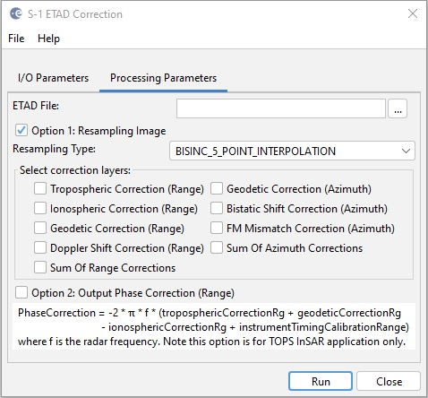

| ETAD Correction for Sentinel-1 Products |
|
The operator applies the ETAD correction to Sentinel-1 TOPS SLC, Stripmap and GRD products. The Extended Timing Annotation Dataset (ETAD) for Copernicus Sentinel-1 is a new auxiliary product developed by ESA in a joint effort with DLR. It estimates the errors caused by the geophysical effects during imaging and the errors introduced during the processing of the Sentinel-1 SLC product. With the application of the ETAD correction, the geometric accuracy of the Sentinel-1 SLC images could be improved to centimetric levels.
The operator offers two corrections, which correspond to the two checkboxes in the UI (Figure 1) below. Resample image (geometric correction) computes for all pixels the range and azimuth offsets based on the user selected ETAD correction layers, then resamples the image based on the computed range and azimuth offsets. It is for applications where accurate geodetic geolocation is required. Apply range-delay phase correction is for InSAR applications where the interferogram is generated from ETAD corrected Sentinel-1 SLC products. Either one or both can be selected, see below.
For TOPS SLC product, the operator currently requires the users split the product into sub-swathes and applies the ETAD correction to each split product.
BISINC_5_POINT_INTERPOLATION). Only
available when Resample image is selected.outputPhaseCorrections in GPT and graph XML): Off by
default. The range corrections are converted to a phase correction. It works for
Sentinel-1 IW SLC and SM SLC products only. If Resample image is not selected, the
phase correction is saved as tie-point grids in the output product and is used later by the
Interferogram operator to correct the interferometric phase (classical InSAR chain).etadPhase band so that
the size of the correction can be checked. This band is not complex, so it changes what
coregistration and stacking see.sourceBands): Optional list of
bands to correct, when set on the command line or in a graph.The two checkboxes Resample image and Apply range-delay phase correction are independent, not alternatives, and at least one of them must be on. Selecting both applies the geometric correction and removes the range-delay phase from the complex data in one pass. This is the combination needed for the geocode-first (GSLC) InSAR chain, because both corrections then live in the pixels and survive geocoding. The combination is implemented for IW (TOPS) products only; for other modes the operator stops with an explanatory message.

GPT operator: S1-ETAD-Correction. Generated from the operator source; parameter names are those used in GPT and graph XML.
| Parameter | Type | Default | Allowed values | Unit | Description |
|---|---|---|---|---|---|
sourceBands | String[] | The list of source bands. | |||
etadFile | File | ETAD product | |||
resamplingType | String | BISINC_5_POINT_INTERPOLATION | Method for resampling image from the un-corrected grid to the etad-corrected grid. | ||
resamplingImage | boolean | true | Resampling Image | ||
outputPhaseCorrections | boolean | false | Output Phase Corrections | ||
outputETADPhaseBand | boolean | false | Also write the applied range-delay phase as an 'etadPhase' band, so the size of the correction can be inspected without reprocessing. Diagnostic only: adds a non-complex band, which changes what coregistration and stacking see. | ||
troposphericCorrectionRg | boolean | false | Tropospheric Correction (Range) | ||
ionosphericCorrectionRg | boolean | false | Ionospheric Correction (Range) | ||
geodeticCorrectionRg | boolean | false | Geodetic Correction (Range) | ||
dopplerShiftCorrectionRg | boolean | false | Doppler Shift Correction (Range) | ||
geodeticCorrectionAz | boolean | false | Geodetic Correction (Azimuth) | ||
bistaticShiftCorrectionAz | boolean | false | Bistatic Shift Correction (Azimuth) | ||
fmMismatchCorrectionAz | boolean | false | FM Mismatch Correction (Azimuth) | ||
sumOfAzimuthCorrections | boolean | true | Sum Of Azimuth Corrections | ||
sumOfRangeCorrections | boolean | true | Sum Of Range Corrections |